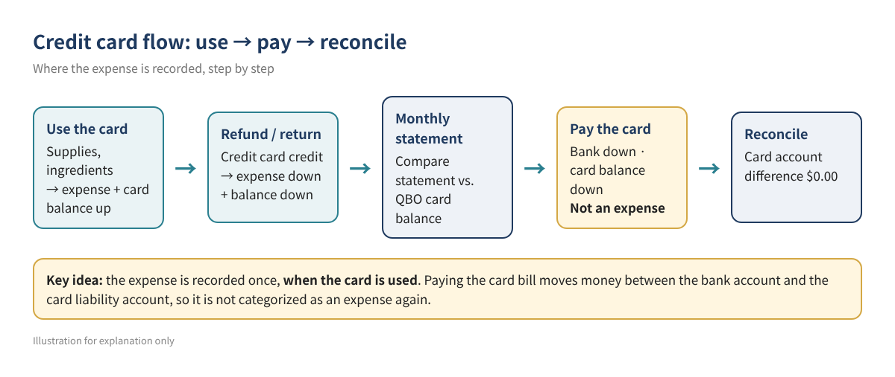
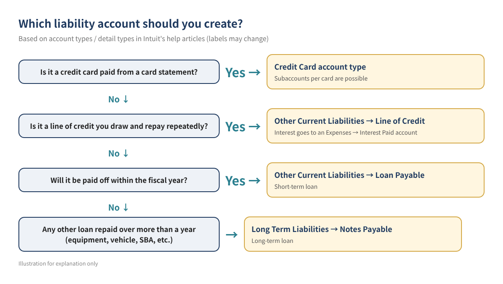
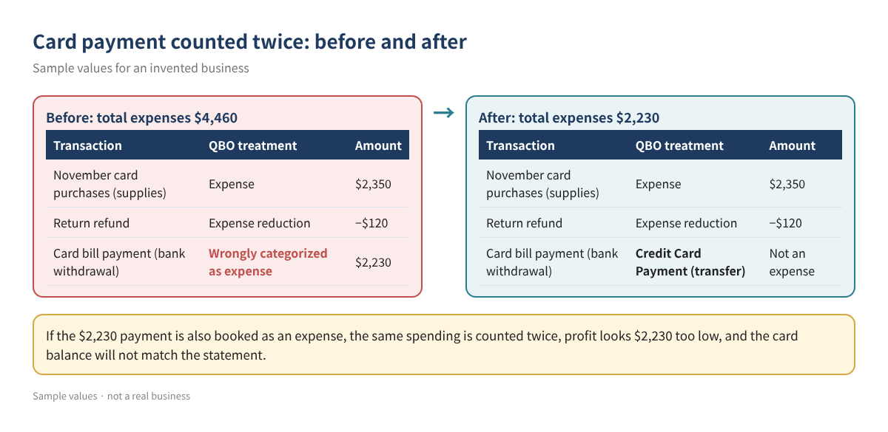
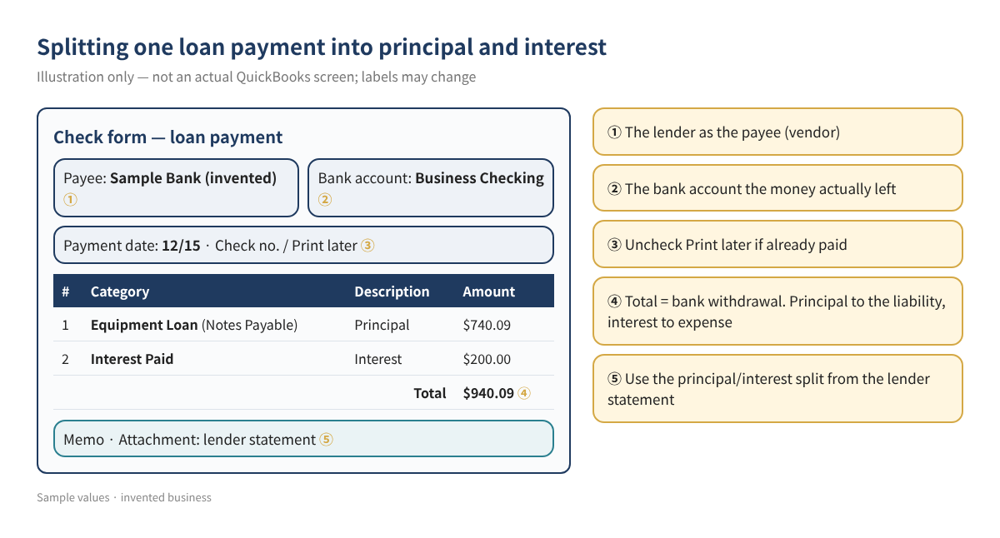

Is Your Credit Card Payment Counted as an Expense Twice? How to Record Credit Cards and Loans in QuickBooks Online
If your QuickBooks Online (QBO) Profit and Loss shows far more expenses than you expected, credit card payments and loan payments are the first places to look. Purchases made on the card are already recorded as expenses. When the card bill is paid from the bank a month later and that withdrawal is also categorized as an "expense," the same spending is counted twice. Loans cause a similar problem: if the full monthly payment is booked as interest expense, the principal becomes an expense too, profit looks smaller than it is, and the loan balance never goes down in your books.
This guide shows how to set up credit cards and loans as liability accounts in QBO and how to record card purchases, refunds and payments, as well as loan proceeds and repayments. It spends extra time on splitting each loan payment into principal and interest, with a worked example. It expands on a topic introduced briefly in the series start post, QuickBooks Online Basics for Beginners, and it builds on Bank Feeds: Match, Add and Rules.
Who this is for ☐ You are not sure how to categorize a credit card payment ☐ Your expenses are much larger than your card statements add up to ☐ You took out an equipment, vehicle or SBA loan but the balance does not appear in QBO ☐ You have been booking the whole loan payment as "Interest" ☐ You want to track several cards issued under one card account
1. The principle: cards and loans are debt accounts
A credit card balance and a loan balance are both money you owe, so QBO tracks them as separate accounts that appear on the Balance Sheet, just like your bank account. Expenses are recorded according to what the money was spent on (supplies, ingredients, interest and so on). Paying the card bill or repaying loan principal simply moves money from the bank to the liability. The table below shows which numbers move for each type of transaction.
| Transaction | Bank balance | Card / loan balance (liability) | Expenses (P&L) |
|---|---|---|---|
| Buy supplies with the card | No change | Up | Up (supplies, etc.) |
| Refund of a card purchase | No change | Down | Down (original expense account) |
| Pay the card bill | Down | Down | No change |
| Loan proceeds deposited | Up | Up | No change (not income) |
| Loan payment – principal | Down | Down | No change |
| Loan payment – interest | Down | No change | Up (interest expense) |
Keep this table in mind and most mistakes go away. Expenses increase only when you spend money to get something, or when you pay interest. Paying down debt is not an expense.

2. Which liability account should you create?
Intuit's help articles recommend different account types and detail types depending on the kind of debt. Create the account from the Chart of accounts with New. Menu locations change often, so look under All apps → Accounting → Chart of accounts, or Settings ⚙ → Chart of accounts, or type "Chart of accounts" in the search bar.
| Type of debt | Account type | Detail type | Sample account name |
|---|---|---|---|
| Business credit card | Credit Card | Credit Card | Biz Card ‑ 1234 (sample) |
| Line of credit | Other Current Liabilities | Line of Credit | LOC ‑ Main Bank (sample) |
| Loan paid off within the fiscal year | Other Current Liabilities | Loan Payable | Short-term working capital loan (sample) |
| Loan repaid over more than a year (equipment, vehicle) | Long Term Liabilities | Notes Payable | Equipment Loan (sample) |
| Loan interest | Expenses | Interest Paid | Interest Expense (sample) |
Do not put a full card number in an account name; the last four digits are enough. If one card company issues several cards (the owner's card, a manager's card), a common setup described in Intuit's help is a parent card account with a subaccount for each card. You can connect either the parent or the subaccounts to the bank feed, not both, and you reconcile the parent, where the subaccount activity rolls up.

Tip: when you first add a card you have used for months or a loan you are already repaying, you enter the starting balance as an opening balance. Opening balances post to Opening Balance Equity, which needs cleanup later. See Opening Balances and Chart of Accounts Setup and Clean Up Opening Balance Equity.
3. Recording card purchases and refunds
3-1. Purchases: bank feed first, Expense for manual entry
When the card account is connected to the card issuer, purchases arrive in Bank transactions, and you categorize them or automate them with rules exactly as you would bank activity. For a card that is not connected, enter purchases manually:
- Select + Create (or + New on some screens), then Expense.
- Choose the vendor in Payee.
- In Payment account, choose the card account, not the bank account. This is what tells QBO the purchase was put on the card.
- Enter the charge date as the Payment date.
- Under Category details, choose the expense account (for example, Supplies) and the amount, and attach the receipt if you have it.
- Select Save and close.
The receipts post shows how to snap a receipt and attach it to the card transaction. If a card is connected, avoid entering its purchases by hand as well; match the downloaded transaction instead, or the same purchase will be recorded twice.
3-2. Refunds and returns: Credit card credit
- Select + Create → Credit card credit.
- Choose the vendor that issued the refund in Payee.
- In the bank/credit account field, choose the card that received the refund.
- Enter the date and amount, and set the Category to the same expense account used for the original purchase.
- Select Save and close.
Using the original expense account is what reduces the expense correctly. Recording the refund as "other income" inflates both income and expenses.
4. Recording the card payment: three ways
Paying the card bill moves money from the bank account to the card account. Intuit's help describes three ways to record it depending on your setup, and none of them uses an expense account. Intuit also suggests reconciling the card account before you record payments.
| Method | Where | Use it when | Watch out for |
|---|---|---|---|
| A. Pay down credit card | + Create → under Other, Pay down credit card | You enter the payment manually | If you paid by check, select "I made a payment with a check" and enter the check number |
| B. Check | + Create → under Vendors, Check | You mailed a check to the card company | Uncheck Print later if the check was already written |
| C. Credit Card Payment in Bank transactions | All apps → Accounting → Bank transactions | Both the bank and the card are connected | The payment arrives in both feeds and must be paired |
4-1. Method C in detail: both accounts connected
With both accounts connected, one payment shows up twice: as a withdrawal in the bank feed and as a payment in the card feed. Adding one as an expense and the other as income throws the books off badly. Instead:
- In Bank transactions, select the bank account and open the card payment withdrawal.
- Change Transaction type to Credit Card Payment and choose the card account.
- Look for a Pair option in the Match/Categorize area. If it is not there, find the transaction in the card account's Pending list and select Match in the Action column to pair it manually.
- Select Post.

5. Reconciling the card account
Like a bank account, a card account should be reconciled to its statement. Intuit's help recommends doing it every month when the statement arrives.
- Go to All apps → Accounting → Reconcile (or Settings ⚙ → Reconcile).
- In Account, choose the card account (the parent account if you use subaccounts).
- Enter the statement's Ending balance and Ending date, then select Start reconciling.
- Check off the purchases, refunds and payments on the statement until Difference is $0.00, then select Finish now.
If a difference remains, find the cause instead of covering it with an adjustment. Duplicates and missing refunds are the usual suspects; see Find Duplicate Transactions and Reconciliation Differences.
6. Recording loans: receiving and repaying
6-1. Loan proceeds deposited to your bank account
- Create the loan account using the table in section 2. For a new loan, Intuit's help says to leave the account's opening balance at $0.
- When the loan deposit arrives in the bank feed, categorize it to the loan account. Loan proceeds are money you must repay, so they are not sales or other income.
- If you do not use bank feeds, record the deposit with a Bank deposit form and choose the loan account; the result is the same.
If you start tracking a loan you are already repaying, enter the balance as of your tracking start date as the opening balance. That balance posts to Opening Balance Equity, and Intuit notes an additional journal entry may be needed depending on the situation. It is safest to review this with your accountant.
6-2. Loan paid directly to the equipment or vehicle seller
If the lender paid the seller directly and the money never touched your bank account, Intuit's help uses a Journal entry: + Create → Journal entry, first line the loan account with the loan amount in Credits, next line the fixed asset account (equipment, vehicle) with the same amount in Debits. Down payments, trade-ins, fees and taxes affect the asset's recorded cost, and Intuit suggests consulting an accountant about them.
6-3. Monthly payments: split one payment into principal and interest
Record each loan payment as one Check (or an Expense, for an automatic debit or card payment) with two category lines:
- Open + Create → Check (Expense for an automatic debit).
- Choose the lender as Payee and the bank account the money actually left.
- Line 1 Category: the loan account (Notes Payable, Loan Payable or Line of Credit) with the principal amount.
- Line 2 Category: your interest expense account (Interest Paid detail type) with the interest amount.
- Confirm the total equals the bank withdrawal, attach the lender statement and save.
Rather than calculating the split yourself, use the numbers on the lender's monthly statement or amortization schedule. Loans that accrue interest daily have slightly different interest each month. When you process the payment from the bank feed, you can split the transaction into the same two lines.

7. Worked example: an invented dry cleaner's card and equipment loan
Take an invented business, "Green Valley Cleaners." All numbers are sample values.
Card: in November the business charged $1,450 of detergent and hangers and $900 of garment bags to its business card ($2,350 total), then returned some bags for a $120 refund. The statement balance is $2,230, paid from the bank on December 10. The correct entries are two purchases (Expense, card account), one refund (Credit card credit) and one payment (Credit Card Payment). November expenses are $2,230 and the card balance is $0 after December 10. Booking the payment as an expense inflates expenses to $4,460, as Figure 3 shows.
Loan: in October the business borrowed $30,000 at 8% per year, repaid in 36 equal monthly payments, to buy a pressing machine, and the lender paid the equipment seller directly. The journal entry was Equipment $30,000 (debit) and Equipment Loan $30,000 (credit). The monthly payment is $940.09. Assume the lender's schedule shows the following for the first three months:
| Payment (Sample values) | Payment amount | Interest → Interest Paid | Principal → Equipment Loan | Loan balance after payment |
|---|---|---|---|---|
| Payment 1 | $940.09 | $200.00 | $740.09 | $29,259.91 |
| Payment 2 | $940.09 | $195.07 | $745.02 | $28,514.89 |
| Payment 3 | $940.09 | $190.10 | $749.99 | $27,764.90 |
| 3-month total | $2,820.27 | $585.17 (expense) | $2,235.10 (debt reduction) | — |
Over three months $2,820.27 left the bank, but only the $585.17 of interest appears as an expense on the P&L. Had the full payments been booked as interest, expenses would be $2,235.10 too high and the Balance Sheet would still show a $30,000 loan that does not match the lender's statement. Comparing the Equipment Loan balance with the lender's principal balance at each month-end catches this immediately.
8. Where this connects to your tax return
IRS Publication 334 (2025) explains that you can generally deduct interest paid on debts related to your business, and that interest relates to your business when the loan proceeds are used for a business expense. That is why interest needs its own account. Principal repayment is paying back debt, so the books record it as a reduction of the liability, not as an expense. If the loan bought equipment or a vehicle, how that asset's cost is deducted follows separate rules such as depreciation, so check with your tax professional.
- Mixed-use loans: Publication 334 says that if a loan is part business and part personal, you must divide the interest between the two parts. The personal part is not a Schedule C expense.
- Car loan interest: for a vehicle used for both business and personal purposes, only the interest that represents business use may be deductible on Schedule C. Other possible deductions for the personal share are covered in Car Loan Interest Deduction (2026).
- Business interest limitation: Publication 334 notes that certain taxpayers must limit their business interest deduction and points to the Instructions for Form 8990. Check the current-year rules to see whether they apply.
- Business expenses on a personal card, personal expenses on a business card: covered in part 12 of this series (owner's draw).
9. Common mistakes
- Categorizing the card payment as an expense: the same spending is counted twice. Record it as a Credit Card Payment (transfer).
- Adding both sides separately when bank and card are connected: the bank side becomes an expense and the card side income. Pair or match them.
- Booking the whole loan payment as interest: expenses are overstated and the loan never decreases. Split principal and interest per the statement.
- Categorizing loan proceeds as sales or other income: revenue and profit are inflated. Use the loan account.
- Recording card refunds to a different account: use the original expense account so the expense actually drops.
- Never comparing the loan account with the lender statement: check loan balances regularly, just as you reconcile cards.
If several months are already miscategorized, you can fix them one by one or reclassify them in bulk; see Bulk Reclassify Transactions with a Journal Entry.
10. FAQ
Q1. Can I enter the card bill as a Bill?
If you already record the card purchases in the card account, there is no need to create a Bill for the statement. A Bill with an expense account would duplicate the expenses. Accounts payable is covered in Bills and Accounts Payable.
Q2. How do I record card interest and annual fees?
A common approach is to record the finance charge on the statement as an Expense paid from the card account and categorized to interest expense, and to categorize fees such as an annual fee to a bank or card fees account. If they come through the feed, categorize the downloaded transaction to those accounts.
Q3. What if the lender does not show the principal and interest split?
Check the transaction history in the lender's online account or the annual interest statement first. If you had to estimate the split in the meantime, adjust later so the loan account balance matches the principal balance on the statement.
Q4. How do I record a draw on a line of credit?
Intuit's help says to record bills or expenses against the line of credit account, and to use a transfer when you move funds from it into another account. Repayments are split like any loan: a principal line to the line of credit account and an interest line to Interest Paid.
Q5. Several cards come on one statement. How should I set up the accounts?
Use a parent card account with a subaccount for each card so you can see spending by card, and reconcile the parent account to the full statement balance. Connect either the parent or the subaccounts to the bank feed, not both.
11. Self-check
- ☐ Each business card has a Credit Card account, and no account name shows a full card number
- ☐ Each loan has a liability account that fits its term (Loan Payable, Notes Payable or Line of Credit)
- ☐ No card payment sits in an expense account (Credit Card Payment or Pay down credit card instead)
- ☐ With bank and card both connected, each payment is paired or matched
- ☐ Card refunds are recorded as Credit card credits to the original expense account
- ☐ Every loan payment is split into a principal line and an interest line, with the lender statement attached
- ☐ Loan proceeds are not categorized as sales or other income
- ☐ Card accounts are reconciled monthly and loan balances compared with lender statements
Related posts
- QuickBooks Online Basics for Beginners: 10 Things to Know
- Getting Started: Opening Balances and Chart of Accounts Setup
- Chart of Accounts Examples by Industry
- Bank Feeds: Match, Add and Rules
- Bills and Accounts Payable
- Receipts: Snap and Match with the Mobile App
- Clean Up Opening Balance Equity
- Find Duplicate Transactions and Reconciliation Differences
- Car Loan Interest Deduction (2026)
This article is general educational information, not tax, legal or financial advice. Consult a qualified professional about your situation. QuickBooks Online screens, menu names, plan features and prices change often, so check the current screens and official Intuit and IRS guidance before you act. The business, vendors, amounts and interest rate in the examples are invented.
QuickBooks is a registered trademark of Intuit Inc.; not affiliated with or endorsed by Intuit.
Sources
- Intuit QuickBooks Help: Record your payments to credit cards in QuickBooks Online
- Intuit QuickBooks Help: Enter vendor credits and refunds in QuickBooks Online
- Intuit QuickBooks Help: Enter and manage expenses in QuickBooks Online
- Intuit QuickBooks Help: Reconcile an account in QuickBooks Online
- Intuit QuickBooks Help: About bank or credit card subaccount setup
- Intuit QuickBooks Help: Set up a loan in QuickBooks Online
- Intuit QuickBooks Help: Record a loan for an asset in QuickBooks Online
- Intuit QuickBooks Help: Manage a line of credit
- IRS: Publication 334 (2025), Tax Guide for Small Business